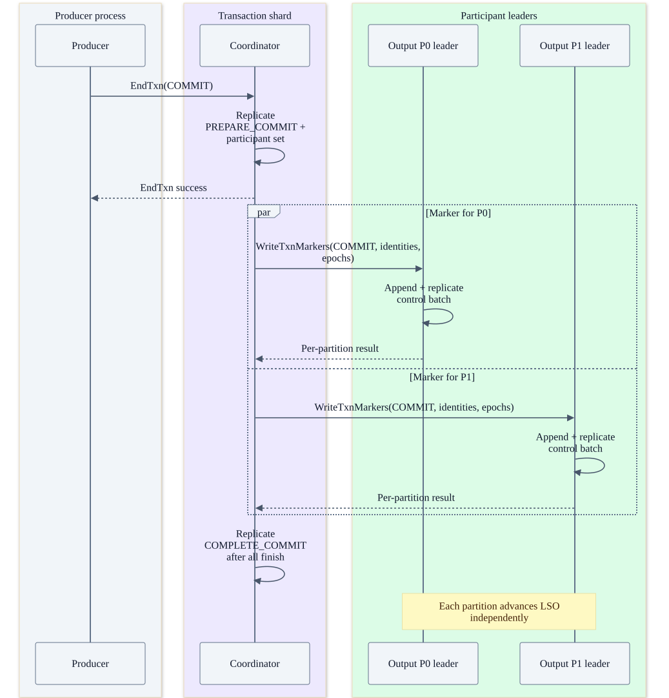

Chapter 23 · source-backed Kafka deep dive
Transaction markers, crash windows and recovery
Treat a Kafka transaction as a durable decision followed by repeatable completion work—not a single packet that instantly makes every partition visible.
1. The three moments people accidentally merge
| Moment | Durable evidence | What it does not prove |
|---|---|---|
| Decision recorded | PREPARE_COMMIT or PREPARE_ABORT replicated in __transaction_state. | All participant markers have finished or all readers can return the data. |
| Participant completed | COMMIT/ABORT control batch replicated in that participant log. | Every other partition completed simultaneously, or earlier transactions cannot hold this partition’s LSO back. |
| Coordinator cleanup completed | COMPLETE_COMMIT / COMPLETE_ABORT persisted after fan-out finishes. | A consumer has processed the output or an external side effect happened exactly once. |
The name PREPARE_COMMIT is easy to misread. In this protocol it records the decision the coordinator must finish; a replacement does not freely reconsider it and abort. Kafka is not sending a database-style prepare vote to every participant before choosing an outcome. Transactional data is already in participant logs; commit/abort markers resolve its visibility.
A transaction leaves evidence in different logs
A Kafka consume-transform-produce transaction can include __consumer_offsets. Ordinary Flink KafkaSource offset commits are not automatically part of this transaction.

2. Follow transaction T42 across brokers
Illustrative placement: producer P writes output/P0 on B1 and output/P1 on B2. T42’s transactional ID maps to __transaction_state/P4 led by B3. Replicas of each log live on other brokers. All three broker roles can coexist in one JVM, but the transaction still has distinct state owners and durability boundaries.
- The producer initializes its transactional identity and receives producer ID/epoch.
beginTransaction()starts client-side transaction state; it is not a controller election or a per-record RPC. - Participants are enrolled/verified according to the negotiated transaction protocol. Older sequences explicitly AddPartitionsToTxn; newer versions integrate more registration/verification with Produce. Do not assume one enrollment RPC per record.
- Produce appends transactional record batches to participant leaders. Batch producer identity, epoch and sequence support fencing and duplicate detection. Replication acknowledgement is separate from committed-read visibility.
commitTransaction()flushes required sends and drives EndTxn(COMMIT). The transaction coordinator validates identity, epoch and state, then appends the prepare decision to its replicated internal log.- After that succeeds, the inspected TV1 and TV2 code can reply to EndTxn before dispatching all markers. The marker manager groups pending participants by current leader endpoint and sends WriteTxnMarkers.
- Each participant appends its control batch and completes the required replication path. Retriable partition errors are requeued; responses can have mixed success across partitions.
- Once the pending participant set is empty, the coordinator appends the COMPLETE state. Failover can regenerate marker work from the earlier durable PREPARE state.
EndTxn decision, marker fan-out, completion
Two participant leaders shown. Each marker must be replicated under its partition policy. Final COMPLETE bookkeeping is not the moment at which every reader simultaneously sees the transaction.

3. WriteTxnMarkers: wire request versus on-disk record
| Layer | Fields / semantics | Important distinction |
|---|---|---|
| WriteTxnMarkers request | Markers[]: ProducerId, ProducerEpoch, TransactionResult, Topics[{Name, PartitionIndexes}], CoordinatorEpoch; v2+ adds TransactionVersion. | Broker-to-broker request from transaction coordinator to current participant leaders. Boolean result selects commit or abort. |
| WriteTxnMarkers response | Per-producer, per-topic-partition error results. | A successful partition is removed from pending work; another can still need retry. |
| Control batch in participant log | Producer identity/epoch in the batch; COMMIT or ABORT control record; EndTransactionMarker carries coordinator epoch. | No complete business payload or full cross-partition participant list is copied into every marker. |
| Transaction-state record | Transactional identity, producer metadata, transaction state, participant set and timing/version metadata. | Stored in __transaction_state, not the controller metadata log. |
| Local producer/transaction tracking | ProducerStateManager, ProducerAppendInfo, transaction index and snapshots/log replay. | Tracks sequence/epoch/open-transaction state; not business-key deduplication. |
At KafkaApis.handleWriteTxnMarkersRequest, authorization and partition checks precede dispatch. For ordinary participants it creates MemoryRecords.withEndTransactionMarker and appends through ReplicaManager with coordinator origin and required acknowledgements of -1. For __consumer_offsets, it delegates to GroupCoordinatorService.completeTransaction so the state-machine completion is ordered with offset work.
TransactionVersion in the marker RPC is not stored as an equivalent field in the record batch. The inspected ProducerAppendInfo explicitly handles replication-origin validation differently because a follower sees the replicated records, not the original RPC metadata. TV2’s epoch rules also differ from legacy behavior; “the marker always has the exact producer epoch used for the data” is unsafe.
Full schemas: WriteTxnMarkers (27), EndTxn (26), TxnOffsetCommit (28).
4. HW, LSO and why a committed record can still wait
LEO = next append offset (local log end)
HW = exclusive replicated/committed-read boundary for the partition
LSO = min(HW, earliest unstable transaction first offset)
Unstable means either:
transaction outcome still undecided in the participant log, OR
its outcome marker has not yet passed the replication boundary.
read_committed returns eligible records below LSO and filters aborted data.
Control batches consume offsets but are not normal application records.| Offset in one partition | Record | Visibility while T1 is open |
|---|---|---|
| 100 | T1 transactional data | Held by T1. |
| 101 | Nontransactional data | Also held behind this partition’s LSO=100 despite having no transaction of its own. |
| 102 | T2 transactional data | Held even if T2 gets its own commit marker first. |
| 103 | T2 COMMIT marker, replicated | Does not resolve earlier T1. |
| 104 | T1 COMMIT marker | When this marker is below HW and no earlier unstable transaction remains, LSO can advance. |
| Alternative: 104 = T1 ABORT | T1 records filtered; 101 and committed T2 can become eligible. | Abort resolves the visibility blockage; it does not erase the physical log bytes immediately. |
This is a teaching example, not a captured log. If HW is 104, a marker at offset 104 has not passed the exclusive committed boundary; HW must advance beyond it. ProducerStateManager tracks both ongoing and completed-but-unreplicated transactions. A marker only appended to one leader’s memory/log is insufficient for stable visibility.
Kafka transactions do not provide a globally synchronized snapshot across all partitions to an arbitrary consumer. P0’s marker can become stable before P1’s. Atomic outcome means the transaction’s writes resolve consistently to commit or abort under the protocol; it does not mean a single poll returns all transaction records at once or no partial observation can occur while reading partitions independently.
5. What a marker does to consumer offsets
For Kafka-native consume-transform-produce, the producer can enroll group offsets in its transaction. TxnOffsetCommit writes pending transactional offset records in __consumer_offsets. On COMMIT marker replay, OffsetMetadataManager materializes those pending offsets; on ABORT it discards them. Stable offset reads must not present unresolved transactional progress as safely committed.
Note the two acknowledgements: “TxnOffsetCommit accepted/replicated” means staged work exists; it does not mean the producer transaction committed. The marker is the outcome signal. Replaying a marker with no pending offsets is a no-op in this state manager. Mixed ordinary and transactional commits use log-record ordering when deciding which offset value wins—not simply the numerically largest consumer offset.
Is this what the standard Flink connector does?
No. A completed Flink checkpoint durably links source split positions, operator state and sink committables. KafkaSink commits its output transaction afterward; optional KafkaSource OffsetCommit is independent. The transaction diagram includes __consumer_offsets only for a producer transaction that explicitly enrolled it. The existing Flink checkpoint chapter shows the separate completion branches.
6. Every important transaction crash window
Crash recovery follows the durable state
This is a decision tree over recovered log state, not every legal TransactionMetadata transition. A prepared decision is irrevocable; completion work is repeatable.

| Crash / loss window | Durable truth on recovery | Required behavior / risk |
|---|---|---|
| Before any transactional send | No participant data from this attempt. | Recover identity/protocol state; application may start/retry according to client API. |
| Produce appended, response lost | Record may already be in the log. | Idempotent retry uses producer identity/epoch/sequence. A fresh business resend is not automatically deduplicated. |
| Data written; no prepare decision committed | Recovered transaction can still be ONGOING. | A valid producer may continue/finish; timeout or fencing can drive abort. read_committed hides unresolved data. |
| EndTxn request lost before processing | No new durable decision from that request. | Client retries using transaction state; do not infer abort from socket failure. |
| Prepare append times out / ACK lost | Decision may or may not be durable. | Resolve by coordinator replay and supported retries. A timeout is not a safe instruction to start a contradictory outcome. |
| PREPARE_COMMIT durable; producer misses response | Commit decision survives independently of producer. | Coordinator or successor continues COMMIT markers. Client cannot choose ABORT to undo it. |
| Coordinator crashes before sending first marker | PREPARE state + participant set survive in __transaction_state. | New owner loads and regenerates fan-out. No producer process is needed to finish the recorded decision. |
| Some participants finish, others do not | Some logs have markers; coordinator still has PREPARE state. | Resume/retry remaining work; replay can re-send to already completed participants. Never convert a partial commit fan-out into abort. |
| Participant leader dies before marker replication | Marker may be absent from surviving committed history. | Route to new eligible leader and retry; durable decision remains the authority. |
| Participant marker replicated; response lost | Participant outcome survives but coordinator may still think it pending. | Repeat completion safely using epoch/producer/transaction state; duplicate control records are not duplicate business outputs. |
| All markers finish; COMPLETE append fails | Participant outcomes already exist; coordinator may reload PREPARE. | Retry bookkeeping or regenerate completion after failover. This does not uncommit participant data. |
| Old coordinator has queued/in-flight markers after relocation | New coordinator has a newer coordinator epoch. | Old local work cancels on ownership checks; participant rejects older observed epochs. Fencing is scoped/validated, not magic message recall. |
| Producer times out while transaction is ONGOING | Coordinator scans eligible timed-out ongoing transactions. | Drive ABORT under the timeout protocol. A durably prepared COMMIT is not replaced just because marker delivery is slow. |
| New producer takes over same transactional ID | Producer fencing/epoch protocol invalidates stale producer work. | An old task cannot safely continue sending; do not solve fencing by randomly changing IDs and replaying visible output. |
| Internal transaction topic cannot meet replication policy | Decision/completion persistence stalls or errors. | Healthy output topic alone is insufficient. Repair internal-topic replication/availability. |
| Permanent participant loss / incompatible fatal marker error | Some completion work cannot finish safely. | Protocol retries are not an infinite repair guarantee; investigate storage, configuration and operator recovery options. |
| Committed data later deleted or all replicas lost | The prior success cannot recreate removed bytes. | Retention, backups and durability policy remain outside transaction atomicity. |
This catalog covers protocol phases and major failure domains, not every possible combination of simultaneous faults. Recovery assumes retained state, valid replicas, supported versions and eventual availability. A permanent outage can preserve safety while preventing completion indefinitely.
| Marker response / condition | Inspected completion-handler action |
|---|---|
| NONE | Remove that participant from the pending set; attempt final transaction-state completion when none remain. |
| Disconnect; UNKNOWN_TOPIC_OR_PARTITION; NOT_LEADER_OR_FOLLOWER; NOT_ENOUGH_REPLICAS; NOT_ENOUGH_REPLICAS_AFTER_APPEND; REQUEST_TIMED_OUT; KAFKA_STORAGE_ERROR | Requeue applicable partitions using current leader metadata, provided this coordinator still owns the transaction. |
| Ownership lost / coordinator epoch changed / loading invalidates old work | Cancel this stale sender’s pending work. The new owner reconstructs authoritative work from its shard. |
| INVALID_PRODUCER_EPOCH / TRANSACTION_COORDINATOR_FENCED | Stop that obsolete marker work. This is not permission to switch a durable COMMIT decision to ABORT. |
| CORRUPT_MESSAGE / MESSAGE_TOO_LARGE / RECORD_LIST_TOO_LARGE / INVALID_REQUIRED_ACKS | Treated as unexpected fatal handler errors, not ordinary infinite retries. |
| UNSUPPORTED_FOR_MESSAGE_FORMAT / UNSUPPORTED_VERSION | The inspected handler removes that participant under its assumption that the producer could not write supported transactional data there; this is a code-specific compatibility path, not a generic recovery recipe. |
The broker maps loading/not-coordinator failures from the group-coordinator completion path to NOT_LEADER_OR_FOLLOWER for the marker sender. This translation is why wire errors do not always use the same names as the internal failing component.
7. Epochs: separate fences for separate stale actors
| Epoch / identity | Fences or distinguishes | Do not confuse with |
|---|---|---|
| KRaft leader epoch | Controller-quorum leadership terms; log/vote validity. | User-topic partition leader epoch. |
| Broker registration epoch | Broker incarnation after registration/restart. | A TCP connection ID or consumer member ID. |
| Partition leader epoch | Leadership generation of a particular partition. | A cluster-wide sequence number. |
| Transaction coordinator epoch | Ownership generation tied to the transaction-state partition; checked on marker work. | Producer epoch. |
| Producer ID + producer epoch + sequence | Producer incarnation and per-partition duplicate/order tracking; marker validation is version-sensitive. | Business-event identity or arbitrary payload deduplication. |
| Group generation / member epoch | Classic/new membership validity and assignment reconciliation. | Kafka topic offsets. |
| Share source leader epoch + state epoch | Stale source leaders and stale delivery-state incarnations. | An acknowledgement count or share-session epoch. |
The participant’s coordinator-epoch check compares against the highest epoch stored in its producer state. It cannot reject an epoch it has never learned merely because another machine has advanced. Safety combines durable decision consistency, ownership checks, record/producer epoch rules and eventual fencing; no single integer magically makes the network synchronous.
TV2 deliberately has additional producer-epoch behavior. The code passes transaction version into the marker append path; follower replication only sees the batch. Explain the invariant—stale work must not corrupt a newer transaction—before presenting version-specific epoch arithmetic.
8. Diagnose a stuck transaction without confusing layers
| Symptom | First questions | Likely layer |
|---|---|---|
| Producer commit returned, consumer sees nothing | Did participant markers replicate? Is an older transaction holding LSO? Is consumer read_committed? | Marker/LSO path, not necessarily producer failure. |
| Marker retry loops | Which partition errors: stale leader, insufficient replicas, timeout, storage error? Has routing changed? | Participant availability and marker sender. |
| Many transactional IDs fail together | Do they map to one unavailable/loading __transaction_state shard? | Transaction coordinator shard rather than every output topic. |
| Offset commits/heartbeats fail but Produce works | Is __consumer_offsets owner ready and reachable? Which group protocol? | Group coordinator/internal-topic path. |
| ShareFetch works but ACCEPT fails | Can source leader reach/persist to the correct share-state owner? Are epochs stale? | Share coordinator/persister rather than source payload log. |
| Many unrelated leaders stop changing | Is metadata quorum healthy and are brokers applying metadata? | Control plane. |
| Flink commit fails after a long outage | Was checkpoint completed? Does its transaction still exist/allow recovery? Did timeout/fencing abort pending work? | Cross-system recovery contract; Kafka cannot resurrect an aborted checkpoint transaction. |
Correlate transaction ID, producer ID/epoch, coordinator shard/epoch, participant partition/leader epoch, HW and LSO. Inspect controller quorum health, metadata application lag, internal-topic replication, coordinator load time and pending marker work before changing timeouts. Do not log credentials or record payloads merely to identify the protocol state.
Visibility latency ≈ producer batching + output replication
+ wait until commit is requested
+ decision replication + marker replication
+ any earlier unresolved transaction on that partition
For Flink, add the checkpoint completion wait before sink commit.
These are dependency terms, not an additive benchmark prediction.Higher batching improves throughput but can add waiting. More participants increase fan-out and the chance one slow partition delays full completion. Shorter transaction timeouts bound abandoned work sooner but tolerate less checkpoint/recovery delay. More replication improves failure tolerance only with sound placement and usable surviving copies.
9. A mental model you can present in 90 seconds
The presentation mental model: map, journal, receipt
Use the same four questions for every failure: who owned it, which durable journal survives, what fences the old owner, and what proves completion?

Kafka has a map and several journals. KRaft replicates the map: which broker owns each partition. User records, group state, transaction decisions and share delivery state live in their own replicated journals. When a broker dies, the controller changes ownership; the replacement replays the appropriate journal. Epochs stop stale actors from corrupting newer work.
A transaction adds a durable decision and receipts. EndTxn records the decision; WriteTxnMarkers delivers it to participant logs. A committed decision must be finished after failover. Read-committed visibility follows replicated markers and the last stable offset—not the arrival of one EndTxn response.
For any failure ask four questions: who owned it, what journal survives, what fences the old owner, and which receipt proves completion?
Quick audience checks
- Controller elected: are all coordinators loaded? No.
- Group coordinator failed: did all source partition leaders change? No.
- EndTxn succeeded: can every output partition be read immediately? No.
- Share consumer side effect succeeded: is ACCEPT atomic with it? No, not in the ordinary path.
- Flink source offset committed to Kafka: is that its checkpoint recovery authority? No.
- Every replica copy lost: can an epoch or checkpoint offset reconstruct the missing Kafka payload? No.
Restart from the cluster picture · Review group/share ownership · Inspect exact RPC schemas
Source evidence, scope and validation gaps
Source baseline: Kafka d2da6a18f839ce8b2eeb4db8e7515200258b0f81. Facts below were traced from this source snapshot. Test bodies were inspected as evidence; Kafka engine tests and live fault injection were not run. The validation report concerns the generated documentation, diagrams and links. Example placements and offsets are illustrative, not an observed deployment.
This is a modern KRaft/source-snapshot guide, not a guarantee for every Kafka release or feature level. It covers ordinary producer transactions and share acknowledgements, not the separate transactional-share development branch or every distributed-transaction API extension. Apache source excerpts are under the Apache License 2.0.
raft-vote · KafkaRaftClient.java:832
Vote validates epochs, candidate log position and voter identity; pre-vote is a distinct mode.
raft/src/main/java/org/apache/kafka/raft/KafkaRaftClient.java
832 private VoteResponseData handleVoteRequest(
833 RaftRequest.Inbound requestMetadata
834 ) {
835 VoteRequestData request = (VoteRequestData) requestMetadata.data();
836
837 if (!hasValidClusterId(request.clusterId())) {
838 return new VoteResponseData().setErrorCode(Errors.INCONSISTENT_CLUSTER_ID.code());
839 }
840
841 if (!hasValidTopicPartition(request, log.topicPartition())) {
842 // Until we support multi-raft, we treat individual topic partition mismatches as invalid requests
843 return new VoteResponseData().setErrorCode(Errors.INVALID_REQUEST.code());
844 }
845
846 VoteRequestData.PartitionData partitionRequest =
847 request.topics().get(0).partitions().get(0);
848
849 int replicaId = partitionRequest.replicaId();
850 int replicaEpoch = partitionRequest.replicaEpoch();
851 boolean preVote = partitionRequest.preVote();
852
853 int lastEpoch = partitionRequest.lastOffsetEpoch();
854 long lastEpochEndOffset = partitionRequest.lastOffset();
855 /* Validate the replica epoch and the log's last epoch.
856 *
857 * For a standard vote, the candidate replica increases the epoch before sending a vote request.
858 * So we expect the replicaEpoch to be strictly greater than the log's last epoch. This is always true because
859 * the candidate has never seen a leader at replicaEpoch.runtime-marker · CoordinatorRuntime.java:2249
Transaction marker completion is serialized through the coordinator runtime.
coordinator-common/src/main/java/org/apache/kafka/coordinator/common/runtime/CoordinatorRuntime.java
2249 public CompletableFuture<Void> scheduleTransactionCompletion(
2250 String name,
2251 TopicPartition tp,
2252 long producerId,
2253 short producerEpoch,
2254 int coordinatorEpoch,
2255 TransactionResult result,
2256 short transactionVersion
2257 ) {
2258 try {
2259 throwIfNotRunning();
2260 log.debug("Scheduled execution of transaction completion for {} with producer id={}, producer epoch={}, " +
2261 "coordinator epoch={}, transaction version={} and transaction result={}.", tp, producerId, producerEpoch, coordinatorEpoch, transactionVersion, result);
2262 CoordinatorCompleteTransactionEvent event = new CoordinatorCompleteTransactionEvent(
2263 name,
2264 tp,
2265 producerId,
2266 producerEpoch,
2267 coordinatorEpoch,
2268 result,
2269 transactionVersion,
2270 writeTimeout
2271 );
2272 enqueueLast(event);
2273 return event.future;
2274 } catch (Throwable t) {
2275 return CompletableFuture.failedFuture(t);
2276 }offset-marker · OffsetMetadataManager.java:1251
Commit materializes pending transactional offsets; abort discards them; no pending offsets makes replay a no-op.
group-coordinator/src/main/java/org/apache/kafka/coordinator/group/OffsetMetadataManager.java
1251 public void replayEndTransactionMarker(
1252 long producerId,
1253 TransactionResult result
1254 ) throws RuntimeException {
1255 Offsets pendingOffsets = pendingTransactionalOffsets.remove(producerId);
1256
1257 if (pendingOffsets == null) {
1258 log.debug("Replayed end transaction marker with result {} for producer id {} but " +
1259 "no pending offsets are present. Ignoring it.", result, producerId);
1260 return;
1261 }
1262
1263 pendingOffsets.offsetsByGroup.forEach((groupId, topicOffsets) -> {
1264 topicOffsets.forEach((topic, partitionOffsets) -> {
1265 partitionOffsets.keySet().forEach(partitionId -> {
1266 openTransactions.remove(groupId, topic, partitionId, producerId);
1267 });
1268 });
1269 });
1270
1271 if (result == TransactionResult.COMMIT) {
1272 log.debug("Committed transactional offset commits for producer id {}.", producerId);
1273
1274 pendingOffsets.offsetsByGroup.forEach((groupId, topicOffsets) -> {
1275 topicOffsets.forEach((topicName, partitionOffsets) -> {
1276 partitionOffsets.forEach((partitionId, offsetAndMetadata) -> {
1277 OffsetAndMetadata existingOffsetAndMetadata = offsets.get(
1278 groupId,txn-end · TransactionCoordinator.scala:544
EndTxn validates identity/state then persists a prepare decision before replying and dispatching markers.
core/src/main/scala/kafka/coordinator/transaction/TransactionCoordinator.scala
544 private def endTransactionWithTV1(transactionalId: String,
545 producerId: Long,
546 producerEpoch: Short,
547 txnMarkerResult: TransactionResult,
548 isFromClient: Boolean,
549 responseCallback: EndTxnCallback,
550 requestLocal: RequestLocal): Unit = {
551 var isEpochFence = false
552 if (transactionalId == null || transactionalId.isEmpty)
553 responseCallback(Errors.INVALID_REQUEST, RecordBatch.NO_PRODUCER_ID, RecordBatch.NO_PRODUCER_EPOCH)
554 else {
555 val preAppendResult: ApiResult[(Int, TxnTransitMetadata)] = txnManager.getTransactionState(transactionalId).flatMap {
556 case None =>
557 Left(Errors.INVALID_PRODUCER_ID_MAPPING)
558
559 case Some(epochAndTxnMetadata) =>
560 val txnMetadata = epochAndTxnMetadata.transactionMetadata
561 val coordinatorEpoch = epochAndTxnMetadata.coordinatorEpoch
562
563 txnMetadata.inLock(() => {
564 if (txnMetadata.producerId != producerId)
565 Left(Errors.INVALID_PRODUCER_ID_MAPPING)
566 // Strict equality is enforced on the client side requests, as they shouldn't bump the producer epoch.
567 else if ((isFromClient && producerEpoch != txnMetadata.producerEpoch) || producerEpoch < txnMetadata.producerEpoch)
568 Left(Errors.PRODUCER_FENCED)
569 else if (txnMetadata.pendingTransitionInProgress && txnMetadata.pendingState.get != TransactionState.PREPARE_EPOCH_FENCE)
570 Left(Errors.CONCURRENT_TRANSACTIONS)
571 else txnMetadata.state match {txn-end-v2 · TransactionCoordinator.scala:759
The common EndTxn path delegates legacy handling and applies TV2 epoch/retry rules.
core/src/main/scala/kafka/coordinator/transaction/TransactionCoordinator.scala
759 private def endTransaction(transactionalId: String,
760 producerId: Long,
761 producerEpoch: Short,
762 txnMarkerResult: TransactionResult,
763 isFromClient: Boolean,
764 clientTransactionVersion: TransactionVersion,
765 responseCallback: EndTxnCallback,
766 requestLocal: RequestLocal): Unit = {
767 if (!clientTransactionVersion.supportsEpochBump()) {
768 endTransactionWithTV1(transactionalId, producerId, producerEpoch, txnMarkerResult, isFromClient, responseCallback, requestLocal)
769 return
770 }
771 var isEpochFence = false
772 if (transactionalId == null || transactionalId.isEmpty)
773 responseCallback(Errors.INVALID_REQUEST, RecordBatch.NO_PRODUCER_ID, RecordBatch.NO_PRODUCER_EPOCH)
774 else {
775 var producerIdCopy = RecordBatch.NO_PRODUCER_ID
776 var producerEpochCopy = RecordBatch.NO_PRODUCER_EPOCH
777 val preAppendResult: ApiResult[(Int, TxnTransitMetadata)] = txnManager.getTransactionState(transactionalId).flatMap {
778 case None =>
779 Left(Errors.INVALID_PRODUCER_ID_MAPPING)
780
781 case Some(epochAndTxnMetadata) =>
782 val txnMetadata = epochAndTxnMetadata.transactionMetadata
783 val coordinatorEpoch = epochAndTxnMetadata.coordinatorEpoch
784
785 txnMetadata.inLock(() => {
786 producerIdCopy = txnMetadata.producerIdtxn-timeout · TransactionStateManager.scala:128
Timeout selection is for eligible ONGOING transactions, not prepared decisions.
core/src/main/scala/kafka/coordinator/transaction/TransactionStateManager.scala
128 def timedOutTransactions(): Iterable[TransactionalIdAndProducerIdEpoch] = {
129 val now = time.milliseconds()
130 inReadLock(stateLock, () => {
131 transactionMetadataCache.flatMap { case (_, entry) =>
132 entry.metadataPerTransactionalId.asScala.filter { case (_, txnMetadata) =>
133 if (txnMetadata.pendingTransitionInProgress) {
134 false
135 } else {
136 txnMetadata.state match {
137 case TransactionState.ONGOING =>
138 // Do not apply timeout to distributed two phase commit transactions.
139 (!txnMetadata.isDistributedTwoPhaseCommitTxn) &&
140 (txnMetadata.txnStartTimestamp + txnMetadata.txnTimeoutMs < now)
141 case _ => false
142 }
143 }
144 }.map { case (txnId, txnMetadata) =>
145 new TransactionalIdAndProducerIdEpoch(txnId, txnMetadata.producerId, txnMetadata.producerEpoch)
146 }
147 }
148 })
149 }
150
151 private def removeExpiredTransactionalIds(
152 transactionPartition: TopicPartition,
153 txnMetadataCacheEntry: TxnMetadataCacheEntry,
154 ): Unit = {
155 inReadLock[Exception](stateLock, () => {marker-schema · WriteTxnMarkersRequest.json:17
Exact marker request fields and TransactionVersion gate are source-generated protocol definitions.
clients/src/main/resources/common/message/WriteTxnMarkersRequest.json
17 "apiKey": 27,
18 "type": "request",
19 "listeners": ["broker"],
20 "name": "WriteTxnMarkersRequest",
21 // Version 0 was removed in Apache Kafka 4.0, Version 1 is the new baseline.
22 //
23 // Version 1 enables flexible versions.
24 // Version 2 adds TransactionVersion field to the WritableTxnMarker (KIP-1228).
25 "validVersions": "1-2",
26 "flexibleVersions": "1+",
27 "fields": [
28 { "name": "Markers", "type": "[]WritableTxnMarker", "versions": "0+",
29 "about": "The transaction markers to be written.", "fields": [
30 { "name": "ProducerId", "type": "int64", "versions": "0+", "entityType": "producerId",
31 "about": "The current producer ID."},
32 { "name": "ProducerEpoch", "type": "int16", "versions": "0+",
33 "about": "The current epoch associated with the producer ID." },
34 { "name": "TransactionResult", "type": "bool", "versions": "0+",
35 "about": "The result of the transaction to write to the partitions (false = ABORT, true = COMMIT)." },
36 { "name": "Topics", "type": "[]WritableTxnMarkerTopic", "versions": "0+",
37 "about": "Each topic that we want to write transaction marker(s) for.", "fields": [
38 { "name": "Name", "type": "string", "versions": "0+", "entityType": "topicName",
39 "about": "The topic name." },
40 { "name": "PartitionIndexes", "type": "[]int32", "versions": "0+",
41 "about": "The indexes of the partitions to write transaction markers for." }
42 ]},
43 { "name": "CoordinatorEpoch", "type": "int32", "versions": "0+",
44 "about": "Epoch associated with the transaction state partition hosted by this transaction coordinator." },txn-reload · TransactionStateManager.scala:538
Recovered PREPARE_COMMIT/PREPARE_ABORT states regenerate marker work.
core/src/main/scala/kafka/coordinator/transaction/TransactionStateManager.scala
538 def loadTransactionsForTxnTopicPartition(partitionId: Int, coordinatorEpoch: Int, sendTxnMarkers: SendTxnMarkersCallback): Unit = {
539 val topicPartition = new TopicPartition(Topic.TRANSACTION_STATE_TOPIC_NAME, partitionId)
540 val partitionAndLeaderEpoch = new TransactionPartitionAndLeaderEpoch(partitionId, coordinatorEpoch)
541
542 inWriteLock(stateLock, () => {
543 loadingPartitions.add(partitionAndLeaderEpoch)
544 })
545
546 def loadTransactions(startTimeMs: java.lang.Long): Unit = {
547 val schedulerTimeMs = time.milliseconds() - startTimeMs
548 info(s"Loading transaction metadata from $topicPartition at epoch $coordinatorEpoch")
549 validateTransactionTopicPartitionCountIsStable()
550
551 val loadedTransactions = loadTransactionMetadata(topicPartition, coordinatorEpoch)
552 val endTimeMs = time.milliseconds()
553 val totalLoadingTimeMs = endTimeMs - startTimeMs
554 partitionLoadSensor.record(totalLoadingTimeMs.toDouble, endTimeMs, false)
555 info(s"Finished loading ${loadedTransactions.size} transaction metadata from $topicPartition in " +
556 s"$totalLoadingTimeMs milliseconds, of which $schedulerTimeMs milliseconds was spent in the scheduler.")
557
558 inWriteLock[Exception](stateLock, () => {
559 if (loadingPartitions.contains(partitionAndLeaderEpoch)) {
560 addLoadedTransactionsToCache(topicPartition.partition, coordinatorEpoch, loadedTransactions)
561
562 val transactionsPendingForCompletion = new mutable.ListBuffer[TransactionalIdCoordinatorEpochAndTransitMetadata]
563 loadedTransactions.forEach((transactionalId, txnMetadata) => {
564 txnMetadata.inLock(() => {
565 // if state is PrepareCommit or PrepareAbort we need to complete the transactiontxn-append · TransactionStateManager.scala:648
Transaction metadata is replicated through the ordinary log append path, with ownership checks.
core/src/main/scala/kafka/coordinator/transaction/TransactionStateManager.scala
648 def appendTransactionToLog(transactionalId: String,
649 coordinatorEpoch: Int,
650 newMetadata: TxnTransitMetadata,
651 responseCallback: Errors => Unit,
652 retryOnError: Errors => Boolean = _ => false,
653 requestLocal: RequestLocal): Unit = {
654
655 // generate the message for this transaction metadata
656 val keyBytes = TransactionLog.keyToBytes(transactionalId)
657 val valueBytes = TransactionLog.valueToBytes(newMetadata, transactionVersionLevel())
658 val timestamp = time.milliseconds()
659
660 val records = MemoryRecords.withRecords(Compression.NONE, new SimpleRecord(timestamp, keyBytes, valueBytes))
661 val transactionStateTopicPartition = new TopicPartition(Topic.TRANSACTION_STATE_TOPIC_NAME, partitionFor(transactionalId))
662 val transactionStateTopicIdPartition = replicaManager.topicIdPartition(transactionStateTopicPartition)
663 val recordsPerPartition = Map(transactionStateTopicIdPartition -> records)
664
665 // set the callback function to update transaction status in cache after log append completed
666 def updateCacheCallback(responseStatus: util.Map[TopicIdPartition, PartitionResponse]): Unit = {
667 // the append response should only contain the topics partition
668 if (responseStatus.size != 1 || !responseStatus.containsKey(transactionStateTopicIdPartition))
669 throw new IllegalStateException("Append status %s should only have one partition %s"
670 .format(responseStatus, transactionStateTopicPartition))
671
672 val status = responseStatus.get(transactionStateTopicIdPartition)
673
674 var responseError = if (status.error == Errors.NONE) {
675 Errors.NONEtxn-markers · TransactionMarkerChannelManager.scala:270
Marker work is grouped by current participant leaders; completion follows removal of pending participants.
core/src/main/scala/kafka/coordinator/transaction/TransactionMarkerChannelManager.scala
270 def addTxnMarkersToSend(coordinatorEpoch: Int,
271 txnResult: TransactionResult,
272 txnMetadata: TransactionMetadata,
273 newMetadata: TxnTransitMetadata): Unit = {
274 val transactionalId = txnMetadata.transactionalId
275 val pendingCompleteTxn = new PendingCompleteTxn(
276 transactionalId,
277 coordinatorEpoch,
278 txnMetadata,
279 newMetadata)
280
281 val prev = transactionsWithPendingMarkers.put(transactionalId, pendingCompleteTxn)
282 if (prev != null) {
283 info(s"Replaced an existing pending complete txn $prev with $pendingCompleteTxn while adding markers to send.")
284 }
285 addTxnMarkersToBrokerQueue(txnMetadata.producerId,
286 txnMetadata.producerEpoch, txnResult, pendingCompleteTxn, txnMetadata.topicPartitions.asScala.toSet)
287 maybeWriteTxnCompletion(transactionalId)
288 }
289
290 def numTxnsWithPendingMarkers: Int = transactionsWithPendingMarkers.size
291
292 private def hasPendingMarkersToWrite(txnMetadata: TransactionMetadata): Boolean = {
293 txnMetadata.inLock(() =>
294 !txnMetadata.topicPartitions.isEmpty
295 )
296 }
297txn-retry · TransactionMarkerRequestCompletionHandler.scala:37
Disconnect/retriable partition errors requeue markers; stale coordinator work is cancelled.
core/src/main/scala/kafka/coordinator/transaction/TransactionMarkerRequestCompletionHandler.scala
37 override def onComplete(response: ClientResponse): Unit = {
38 val requestHeader = response.requestHeader
39 val correlationId = requestHeader.correlationId
40 if (response.wasDisconnected) {
41 trace(s"Cancelled request with header $requestHeader due to node ${response.destination} being disconnected")
42
43 for (pendingCompleteTxnAndMarker <- pendingCompleteTxnAndMarkerEntries.asScala) {
44 val pendingCompleteTxn = pendingCompleteTxnAndMarker.pendingCompleteTxn
45 val transactionalId = pendingCompleteTxn.transactionalId
46 val txnMarker = pendingCompleteTxnAndMarker.txnMarkerEntry
47
48 txnStateManager.getTransactionState(transactionalId) match {
49
50 case Left(Errors.NOT_COORDINATOR) =>
51 info(s"I am no longer the coordinator for $transactionalId; cancel sending transaction markers $txnMarker to the brokers")
52
53 txnMarkerChannelManager.removeMarkersForTxn(pendingCompleteTxn)
54
55 case Left(Errors.COORDINATOR_LOAD_IN_PROGRESS) =>
56 info(s"I am loading the transaction partition that contains $transactionalId which means the current markers have to be obsoleted; " +
57 s"cancel sending transaction markers $txnMarker to the brokers")
58
59 txnMarkerChannelManager.removeMarkersForTxn(pendingCompleteTxn)
60
61 case Left(unexpectedError) =>
62 throw new IllegalStateException(s"Unhandled error $unexpectedError when fetching current transaction state")
63
64 case Right(None) =>marker-handler · KafkaApis.scala:1748
Participant brokers append control batches; __consumer_offsets markers use the group coordinator completion path.
core/src/main/scala/kafka/server/KafkaApis.scala
1748 def handleWriteTxnMarkersRequest(request: Request, requestLocal: RequestLocal): Unit = {
1749 // We are checking for AlterCluster permissions first. If it is not present, we are authorizing cluster operation
1750 // The latter will throw an exception if it is denied.
1751 if (!authHelper.authorize(request.context, ALTER, CLUSTER, CLUSTER_NAME, true, false, 1)) {
1752 authHelper.authorizeClusterOperation(request, CLUSTER_ACTION)
1753 }
1754 val writeTxnMarkersRequest = request.body(classOf[WriteTxnMarkersRequest])
1755 val errors = new ConcurrentHashMap[java.lang.Long, util.Map[TopicPartition, Errors]]()
1756 // List of transaction marker entries, each containing producer metadata, transaction result (commit/abort),
1757 // target partitions, and transaction version.
1758 val markers = writeTxnMarkersRequest.markers
1759 val numAppends = new AtomicInteger(markers.size)
1760
1761 if (numAppends.get == 0) {
1762 requestHelper.sendResponseExemptThrottle(request, new WriteTxnMarkersResponse(errors))
1763 return
1764 }
1765
1766 def updateErrors(producerId: Long, currentErrors: ConcurrentHashMap[TopicPartition, Errors]): Unit = {
1767 val previousErrors = errors.putIfAbsent(producerId, currentErrors)
1768 if (previousErrors != null)
1769 previousErrors.putAll(currentErrors)
1770 }
1771
1772 /**
1773 * This is the call back invoked when a log append of transaction markers succeeds. This can be called multiple
1774 * times when handling a single WriteTxnMarkersRequest because there is one append per TransactionMarker in the
1775 * request, so there could be multiple appends of markers to the log. The final response will be sent onlymarker-fence · ProducerAppendInfo.java:246
Participant producer state rejects marker coordinator epochs older than the highest observed epoch.
storage/src/main/java/org/apache/kafka/storage/internals/log/ProducerAppendInfo.java
246 private void checkCoordinatorEpoch(EndTransactionMarker endTxnMarker, long offset) {
247 if (updatedEntry.coordinatorEpoch() > endTxnMarker.coordinatorEpoch()) {
248 if (origin == AppendOrigin.REPLICATION) {
249 log.info("Detected invalid coordinator epoch for producerId {} at offset {} in partition {}: {} is older than previously known coordinator epoch {}",
250 producerId, offset, topicPartition, endTxnMarker.coordinatorEpoch(), updatedEntry.coordinatorEpoch());
251 } else {
252 throw new TransactionCoordinatorFencedException("Invalid coordinator epoch for producerId " + producerId + " at " +
253 "offset " + offset + " in partition " + topicPartition + ": " + endTxnMarker.coordinatorEpoch() +
254 " (zombie), " + updatedEntry.coordinatorEpoch() + " (current)");
255 }
256 }
257 }
258
259 public Optional<CompletedTxn> appendEndTxnMarker(EndTransactionMarker endTxnMarker,
260 short producerEpoch,
261 long offset,
262 long timestamp,
263 short transactionVersion) {
264 // For replication (REPLICATION origin), TV_UNKNOWN is allowed because:
265 // 1. transactionVersion is not stored in MemoryRecords - it's only metadata in WriteTxnMarkersRequest
266 // 2. When records are replicated, followers only see MemoryRecords without transactionVersion
267 // 3. The leader already validated the marker with the correct transactionVersion (e.g., TV2 strict validation)
268 // 4. Using TV_0 validation (markerEpoch >= currentEpoch) is safe because it's more permissive than TV2
269 // (markerEpoch > currentEpoch), so any marker that passed TV2 validation will pass TV_0 validation
270 // For all other origins (CLIENT, COORDINATOR), transactionVersion must be explicitly specified.
271 if (transactionVersion == TV_UNKNOWN && origin != AppendOrigin.REPLICATION) {
272 throw new IllegalArgumentException("transactionVersion must be explicitly specified, " +
273 "cannot use default value TV_UNKNOWN for origin " + origin);marker-append · ProducerAppendInfo.java:259
Producer epoch checks differ by transaction version; marker data updates producer/transaction state.
storage/src/main/java/org/apache/kafka/storage/internals/log/ProducerAppendInfo.java
259 public Optional<CompletedTxn> appendEndTxnMarker(EndTransactionMarker endTxnMarker,
260 short producerEpoch,
261 long offset,
262 long timestamp,
263 short transactionVersion) {
264 // For replication (REPLICATION origin), TV_UNKNOWN is allowed because:
265 // 1. transactionVersion is not stored in MemoryRecords - it's only metadata in WriteTxnMarkersRequest
266 // 2. When records are replicated, followers only see MemoryRecords without transactionVersion
267 // 3. The leader already validated the marker with the correct transactionVersion (e.g., TV2 strict validation)
268 // 4. Using TV_0 validation (markerEpoch >= currentEpoch) is safe because it's more permissive than TV2
269 // (markerEpoch > currentEpoch), so any marker that passed TV2 validation will pass TV_0 validation
270 // For all other origins (CLIENT, COORDINATOR), transactionVersion must be explicitly specified.
271 if (transactionVersion == TV_UNKNOWN && origin != AppendOrigin.REPLICATION) {
272 throw new IllegalArgumentException("transactionVersion must be explicitly specified, " +
273 "cannot use default value TV_UNKNOWN for origin " + origin);
274 }
275 // For replication with TV_UNKNOWN, use legacy validation (TV_0 behavior) since the leader already
276 // performed strict validation and the follower doesn't have access to the original transactionVersion
277 short effectiveTransactionVersion = (transactionVersion == TV_UNKNOWN) ? 0 : transactionVersion;
278 checkProducerEpoch(producerEpoch, offset, effectiveTransactionVersion);
279 checkCoordinatorEpoch(endTxnMarker, offset);
280
281 // Only emit the `CompletedTxn` for non-empty transactions. A transaction marker
282 // without any associated data will not have any impact on the last stable offset
283 // and would not need to be reflected in the transaction index.
284 Optional<CompletedTxn> completedTxn = updatedEntry.currentTxnFirstOffset().isPresent() ?
285 Optional.of(new CompletedTxn(producerId, updatedEntry.currentTxnFirstOffset().getAsLong(), offset,
286 endTxnMarker.controlType() == ControlRecordType.ABORT))unstable · ProducerStateManager.java:246
Undecided transactions and markers not yet below the high watermark both hold back stable visibility.
storage/src/main/java/org/apache/kafka/storage/internals/log/ProducerStateManager.java
246 public Optional<LogOffsetMetadata> firstUnstableOffset() {
247 Optional<LogOffsetMetadata> unreplicatedFirstOffset = Optional.ofNullable(unreplicatedTxns.firstEntry()).map(e -> e.getValue().firstOffset);
248 Optional<LogOffsetMetadata> undecidedFirstOffset = Optional.ofNullable(ongoingTxns.firstEntry()).map(e -> e.getValue().firstOffset);
249
250 if (unreplicatedFirstOffset.isEmpty())
251 return undecidedFirstOffset;
252 else if (undecidedFirstOffset.isEmpty())
253 return unreplicatedFirstOffset;
254 else if (undecidedFirstOffset.get().messageOffset < unreplicatedFirstOffset.get().messageOffset)
255 return undecidedFirstOffset;
256 else
257 return unreplicatedFirstOffset;
258 }
259
260 /**
261 * Acknowledge all transactions which have been completed before a given offset. This allows the LSO
262 * to advance to the next unstable offset.
263 */
264 public void onHighWatermarkUpdated(long highWatermark) {
265 removeUnreplicatedTransactions(highWatermark);
266 }
267
268 /**
269 * The first undecided offset is the earliest transactional message which has not yet been committed
270 * or aborted. Unlike [[firstUnstableOffset]], this does not reflect the state of replication (i.e.
271 * whether a completed transaction marker is beyond the high watermark).
272 */
273 public OptionalLong firstUndecidedOffset() {lso · UnifiedLog.java:678
The exclusive stable boundary is min(high watermark, earliest unstable transaction offset).
storage/src/main/java/org/apache/kafka/storage/internals/log/UnifiedLog.java
678 public long lastStableOffset() {
679 // cache the first unstable offset metadata to avoid a concurrent update breaking the isPresent check
680 Optional<LogOffsetMetadata> firstUnstableOffsetMetadataCopy = firstUnstableOffsetMetadata;
681 if (firstUnstableOffsetMetadataCopy.isPresent() && firstUnstableOffsetMetadataCopy.get().messageOffset < highWatermark()) {
682 return firstUnstableOffsetMetadataCopy.get().messageOffset;
683 } else {
684 return highWatermark();
685 }
686 }
687
688 public long lastStableOffsetLag() {
689 return highWatermark() - lastStableOffset();
690 }
691
692 /**
693 * Fully materialize and return an offset snapshot including segment position info. This method will update
694 * the LogOffsetMetadata for the high watermark and last stable offset if they are message-only. Throws an
695 * offset out of range error if the segment info cannot be loaded.
696 */
697 public LogOffsetSnapshot fetchOffsetSnapshot() throws IOException {
698 LogOffsetMetadata lastStable = fetchLastStableOffsetMetadata();
699 LogOffsetMetadata highWatermark = fetchHighWatermarkMetadata();
700 return new LogOffsetSnapshot(
701 logStartOffset,
702 localLog.logEndOffsetMetadata(),
703 highWatermark,
704 lastStable
705 );test-marker-timeout · CoordinatorRuntimeTest.java:1418
Test exercises timeout during group-coordinator marker completion.
1418 public void testScheduleTransactionCompletionWhenWriteTimesOut() throws InterruptedException {
1419 MockTimer timer = new MockTimer();
1420 MockPartitionWriter writer = new MockPartitionWriter();
1421
1422 CoordinatorRuntime<MockCoordinatorShard, String> runtime =
1423 new CoordinatorRuntime.Builder<MockCoordinatorShard, String>()
1424 .withTime(timer.time())
1425 .withTimer(timer)
1426 .withWriteTimeout(DEFAULT_WRITE_TIMEOUT)
1427 .withLoader(new MockCoordinatorLoader())
1428 .withEventProcessor(new DirectEventProcessor())
1429 .withPartitionWriter(writer)
1430 .withCoordinatorShardBuilderSupplier(new MockCoordinatorShardBuilderSupplier())
1431 .withCoordinatorRuntimeMetrics(mock(CoordinatorRuntimeMetrics.class))
1432 .withCoordinatorMetrics(mock(CoordinatorMetrics.class))
1433 .withSerializer(new StringSerializer())
1434 .withExecutorService(mock(ExecutorService.class))
1435 .withCachedBufferMaxBytesSupplier(() -> CACHED_BUFFER_MAX_BYTES)
1436 .build();
1437
1438 // Loads the coordinator.
1439 runtime.scheduleLoadOperation(TP, 10);
1440
1441 // Verify the initial state.
1442 CoordinatorRuntime<MockCoordinatorShard, String>.CoordinatorContext ctx = runtime.contextOrThrow(TP);
1443 assertEquals(0, ctx.coordinator.lastWrittenOffset());
1444 assertEquals(0, ctx.coordinator.lastCommittedOffset());
1445 assertEquals(List.of(0L), ctx.coordinator.snapshotRegistry().epochsList());test-txn-reload · TransactionStateManagerTest.scala:285
Inspected test rebuilds transaction state from multiple log records and removes it on resignation.
core/src/test/scala/unit/kafka/coordinator/transaction/TransactionStateManagerTest.scala
285 def testLoadAndRemoveTransactionsForPartition(): Unit = {
286 // generate transaction log messages for two pids traces:
287
288 // pid1's transaction started with two partitions
289 txnMetadata1.state(TransactionState.ONGOING)
290 txnMetadata1.addPartitions(util.Set.of(new TopicPartition("topic1", 0),
291 new TopicPartition("topic1", 1)))
292
293 txnRecords += new SimpleRecord(txnMessageKeyBytes1, TransactionLog.valueToBytes(txnMetadata1.prepareNoTransit(), TV_2))
294
295 // pid1's transaction adds three more partitions
296 txnMetadata1.addPartitions(util.Set.of(new TopicPartition("topic2", 0),
297 new TopicPartition("topic2", 1),
298 new TopicPartition("topic2", 2)))
299
300 txnRecords += new SimpleRecord(txnMessageKeyBytes1, TransactionLog.valueToBytes(txnMetadata1.prepareNoTransit(), TV_2))
301
302 // pid1's transaction is preparing to commit
303 txnMetadata1.state(TransactionState.PREPARE_COMMIT)
304
305 txnRecords += new SimpleRecord(txnMessageKeyBytes1, TransactionLog.valueToBytes(txnMetadata1.prepareNoTransit(), TV_2))
306
307 // pid2's transaction started with three partitions
308 txnMetadata2.state(TransactionState.ONGOING)
309 txnMetadata2.addPartitions(util.Set.of(new TopicPartition("topic3", 0),
310 new TopicPartition("topic3", 1),
311 new TopicPartition("topic3", 2)))
312test-marker-retry · TransactionMarkerRequestCompletionHandlerTest.scala:66
Inspected test verifies marker requeue on disconnected broker.
66 def shouldReEnqueuePartitionsWhenBrokerDisconnected(): Unit = {
67 mockCache()
68
69 handler.onComplete(new ClientResponse(new RequestHeader(ApiKeys.PRODUCE, 0, "client", 1),
70 null, null, 0, 0, true, null, null, null))
71
72 verify(markerChannelManager).addTxnMarkersToBrokerQueue(producerId,
73 producerEpoch, txnResult, pendingCompleteTxnAndMarkers.get(0).pendingCompleteTxn,
74 Set[TopicPartition](topicPartition))
75 }
76
77 @Test
78 def shouldThrowIllegalStateExceptionIfErrorCodeNotAvailableForPid(): Unit = {
79 mockCache()
80
81 val response = new WriteTxnMarkersResponse(new java.util.HashMap[java.lang.Long, java.util.Map[TopicPartition, Errors]]())
82
83 assertThrows(classOf[IllegalStateException], () => handler.onComplete(new ClientResponse(new RequestHeader(
84 ApiKeys.PRODUCE, 0, "client", 1), null, null, 0, 0, false, null, null, response)))
85 }
86
87 @Test
88 def shouldCompleteDelayedOperationWhenNoErrors(): Unit = {
89 mockCache()
90
91 verifyCompleteDelayedOperationOnError(Errors.NONE)
92 }
93test-marker-stale · TransactionMarkerRequestCompletionHandlerTest.scala:111
Inspected test cancels stale work after coordinator epoch changes.
111 def shouldCompleteDelayedOperationWhenCoordinatorEpochChanged(): Unit = {
112 when(txnStateManager.getTransactionState(ArgumentMatchers.eq(transactionalId)))
113 .thenReturn(Right(Some(new CoordinatorEpochAndTxnMetadata(coordinatorEpoch+1, txnMetadata))))
114
115 verifyRemoveDelayedOperationOnError(Errors.NONE)
116 }
117
118 @Test
119 def shouldCompleteDelayedOperationWhenInvalidProducerEpoch(): Unit = {
120 mockCache()
121
122 verifyRemoveDelayedOperationOnError(Errors.INVALID_PRODUCER_EPOCH)
123 }
124
125 @Test
126 def shouldCompleteDelayedOperationWhenCoordinatorEpochFenced(): Unit = {
127 mockCache()
128
129 verifyRemoveDelayedOperationOnError(Errors.TRANSACTION_COORDINATOR_FENCED)
130 }
131
132 @Test
133 def shouldThrowIllegalStateExceptionWhenUnknownError(): Unit = {
134 verifyThrowIllegalStateExceptionOnError(Errors.UNKNOWN_SERVER_ERROR)
135 }
136
137 @Test
138 def shouldThrowIllegalStateExceptionWhenCorruptMessageError(): Unit = {test-stable · ProducerStateManagerTest.java:1244
Test covers stable-offset calculation across interleaved transactions.
storage/src/test/java/org/apache/kafka/storage/internals/log/ProducerStateManagerTest.java
1244 public void testLastStableOffsetCompletedTxn() {
1245 long segmentBaseOffset = 990000L;
1246
1247 long producerId1 = producerId;
1248 long startOffset1 = 992342L;
1249 beginTransaction(producerId1, startOffset1, segmentBaseOffset);
1250
1251 long producerId2 = producerId + 1;
1252 long startOffset2 = startOffset1 + 25;
1253 beginTransaction(producerId2, startOffset2, segmentBaseOffset);
1254
1255 long producerId3 = producerId + 2;
1256 long startOffset3 = startOffset1 + 57;
1257 beginTransaction(producerId3, startOffset3, segmentBaseOffset);
1258
1259 long lastOffset1 = startOffset3 + 15;
1260 CompletedTxn completedTxn1 = new CompletedTxn(producerId1, startOffset1, lastOffset1, false);
1261 assertEquals(startOffset2, stateManager.lastStableOffset(completedTxn1));
1262 stateManager.completeTxn(completedTxn1);
1263 stateManager.onHighWatermarkUpdated(lastOffset1 + 1);
1264
1265 assertEquals(Optional.of(startOffset2), stateManager.firstUnstableOffset().map(x -> x.messageOffset));
1266
1267 long lastOffset3 = lastOffset1 + 20;
1268 CompletedTxn completedTxn3 = new CompletedTxn(producerId3, startOffset3, lastOffset3, false);
1269 assertEquals(startOffset2, stateManager.lastStableOffset(completedTxn3));
1270 stateManager.completeTxn(completedTxn3);
1271 stateManager.onHighWatermarkUpdated(lastOffset3 + 1);Supporting versioned references: Kafka 4.1 protocol reference (older than this source snapshot), and KIP-932 share-group design. Source wins where versioned documentation or proposals differ.